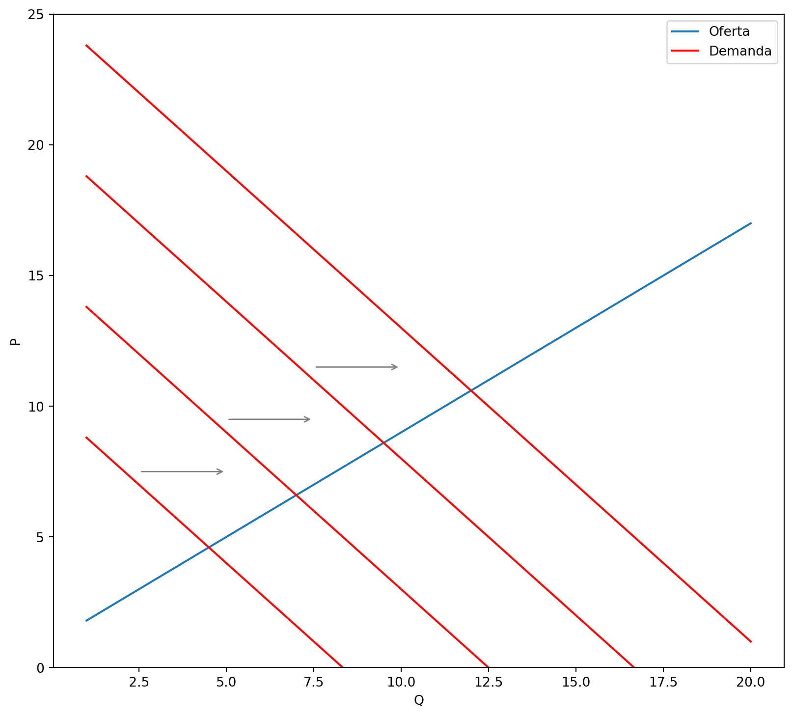
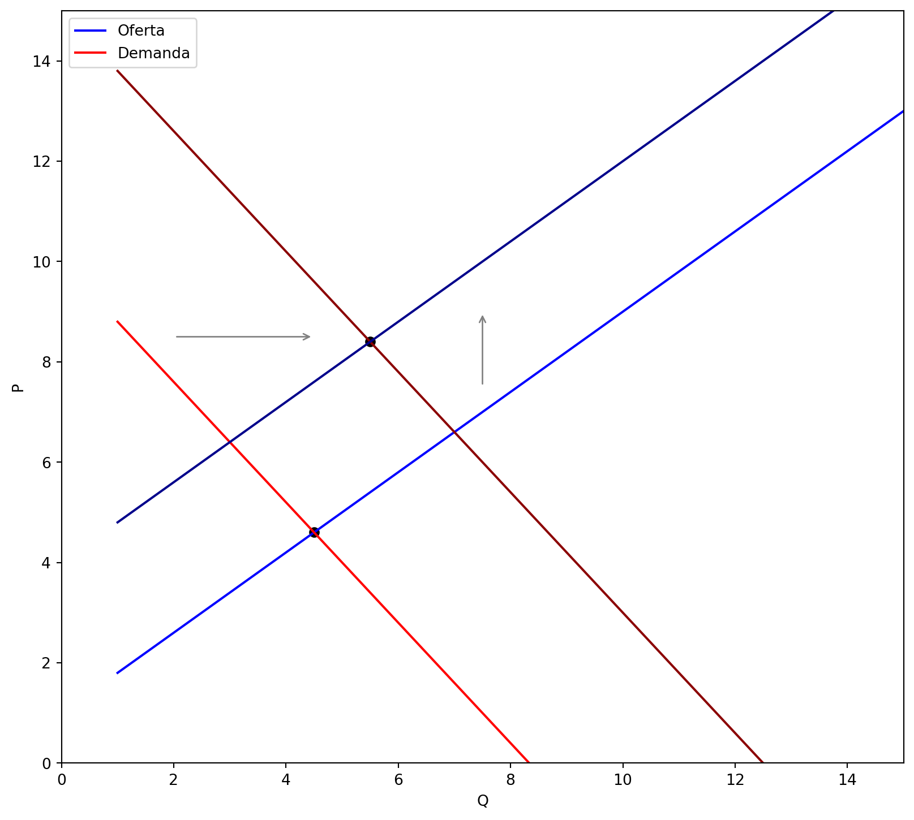

Econometria III
Modelos de Equações Simultâneas
Introdução
Até agora nos preocupamos apenas com modelos de regressão com uma única equação
Modelos em que há uma única variável dependente e uma ou mais variáveis explicativas
Nesses modelos, o foco foi a estimação do valor médio da variável resposta (dependente), condicionado aos valores das variáveis explicativas (regressores).
A relação de causa e efeito, nesses modelos, se existir, vai das variáveis explicativas para a variável resposta
Introdução
Porém, existem casos onde essa relação unidirecional não faz sentido econômico
Isso ocorre quando a variável resposta é determinada por um grupo de variáveis explicativas onde algumas são, por sua vez, determinadas pela variável resposta.
Temos determinação simultânea de variáveis econômicas
Também pode ser entendida como causalidade reversa
Introdução
Há uma relação simultânea, entre a variável resposta e alguns regressores endógenos, o que torna a distinção entre variáveis dependentes e independentes duvidosa.
Agrupamos o conjunto de variáveis que possam ser determinadas simultaneamente exatamente como se faz em modelos de equações.
Assim, nos modelos de equações simultâneas há mais de uma equação – uma para cada variável endógena.
Exemplo
Oferta e Demanda
O preço P de um bem e a quantidade Q vendida são determinados pela intersecção das curvas de demanda e oferta desse bem.
Para simplificar, vamos supor que as curvas de oferta e demanda sejam lineares e, ainda, acrescentando os choques aleatórios, \(u_1\) e \(u_2\) , podemos escrever as equações de oferta e demanda empíricas como: \[ \begin{aligned} Q^d&=\alpha_1+\alpha_2 P + u_1, &\alpha_2<0\\ Q^o&=\beta_1+\beta_2 P + u_2, &\beta_2>0\\ Q^d&=Q^o=Q \end{aligned} \]
Exemplo
Oferta e Demanda

Se a curva de oferta tiver inclinação positiva e houver um choque de demanda \(u_1\), a curva da demanda se deslocará
Entretanto, como mostra a figura ao lado, um deslocamento na demanda altera tanto a quantidade Q quanto o preço P
Ou seja, \(u_1\) e P não podem ser considerados independentes.
Exemplo
Oferta e Demanda
\(\underbrace{\alpha_1+\alpha_2 P + u_1}_{Q^d} = \underbrace{\beta_1+\beta_2 P + u_2}_{Q^o}\)
Condição de equilíbrio \[P=\underbrace{\frac{\alpha_1-\beta_1}{\beta_2-\alpha_2}}_{\pi_1}+\underbrace{\frac{u_1-u_2}{\beta_2-\alpha_2}}_{v_1}\]
Fica claro que P contém o termo de erro \(u_1\) (e \(u_2\)!), logo não pode ser exógeno em nenhuma das duas equações
O mesmo procedimento pode ser feito para Q
Viés de Simultaneidade
Simultaneidade ocorre quando uma ou mais variáveis explicativas são determinadas conjuntamente com a variável dependente
Quando há simultaneidade, o método MQO gera estimadores viesados e inconsistentes.
Regressores não são exógenos! \(E[u\mid X]\neq 0\)
Viés de Simultaneidade no MQO
\[ \begin{aligned} y_1&=\alpha_1y_2+\beta_1z_1+u_1\\ y_2&=\alpha_2y_1+\beta_2z_2+u_2 \end{aligned} \]
Vamos nos concentrar em estimar a primeira equação.
Para dar interpretação causal e estimar por MQO, \(y_2\) deve ser não correlacionada com \(u_1\)
Substituindo \(y_2\) na primeira equação \[(1-\alpha_1\alpha_2)y_2=\alpha_2\beta_1z_1+\beta_2z_2+\alpha_2u_1+u_2,\qquad \text{ hipótese: }\alpha_1\alpha_2\neq 1\]
\(y_2=\pi_{21}z_1+\pi_{22}z_2+v_2\)
\(v_2=(\alpha_2u_1+u_2)/((1-\alpha_1\alpha_2))\)
Ou seja, \(y_2\) contém em seu termo de erro \(v_2\) o erro \(u_1\)!!
- Exceção: \(\alpha_2=0\) quando \(u_1\perp u_2\). Equações desacopladas
Viés de Simultaneidade no MQO
Quando \(y_2\) for correlacionado com \(u_1\) em virtude das equações simultâneas, dizemos que MQO sofre de viés de simultaneidade
A direção do viés pode ser complicada em modelos mais complexos
Partimos da covariância de \(y_2\) com \(u_1\)
\(Cov(y_2, u_1)=Cov(v_2, u_1)\) Por quê?
\(Cov(y_2, u_1)=\frac{\alpha_2}{(1-\alpha_1\alpha_2)}\sigma_1^2\)
Problema de Identificação
Por problema de identificação entendemos a possibilidade de recuperar os parâmetros de uma equação estrutural a partir dos coeficientes estimados na forma reduzida.
Equação estrutural é aquela que retrata a estrutura de uma economia ou o comportamento de um agente econômico. Exemplos: curva de oferta e demanda
Forma reduzida é a equação que expressa uma variável endógena apenas em termos das variáveis exógenas e dos termos de erros estocásticos.
- Exemplo anterior: \(y_2=\pi_{21}z_1+\pi_{22}z_2+v_2\)
A equação estrutural é identificada quando a recuperação de todos os seus parâmetros puder ser feita com base nos parâmetros estimados da forma reduzida.
Problema de Identificação
O problema de identificação surge pois uma equação na forma reduzida pode ser compatível com diferentes equações estruturais ou diferentes hipóteses (modelos)
Dessa forma, não é possível dizer qual modelo específico está sob investigação.
Maneira fácil de saber: forma reduzida possui menos parâmetros que as equações estruturais
Exemplo de (Não) Identificação
Voltamos ao nosso exemplo. As formas reduzidas são: \[ \begin{aligned} P&=\pi_1+v_1\\ Q&=\pi_2+v_2, \end{aligned} \] onde
\(\pi_1=\frac{\alpha_1-\beta_1}{\beta_2-\alpha_2}\), \(v_1=\frac{u_1-u_2}{\beta_2-\alpha_2}\), \(\pi_2=\frac{\alpha_1\beta_2-\alpha_2\beta_1}{\beta_2-\alpha_2}\) e \(v_2=\frac{\beta_2 u_1 - \alpha_2 u_2}{\beta_2-\alpha_2}\)
A forma reduzida provê apenas 2 parâmetros, \(\pi_1\) e \(\pi_2\)
Nossas equações estruturais possuem 4 parâmetros, \(\alpha_1, \alpha_2, \beta_1, \beta_2\).
Portanto, não é possível calcular os parâmetros estruturais a partir dos coeficientes estimados na forma reduzida
Condição de Classificação
Tip
A primeira equação em um modelo de equações simultâneas com duas equações será identificada se, e somente se, a segunda equação contiver ao menos uma variável exógena (com coeficiente diferente de zero) que esteja excluída da primeira equação.
\[ \begin{aligned} Q^d&=\alpha_1+\alpha_2 P + u_1, &\alpha_2<0\\ Q^o&=\beta_1+\beta_2 P + u_2, &\beta_2>0\\ Q^d&=Q^o=Q \end{aligned} \]
Não temos nenhuma variável exógena neste modelo! A condição de classificação não é satisfeita
Equações estruturais não identificadas (ou subidentificadas)
Condição de Classificação
Alteramos o modelo incluindo a renda Y e assumindo que esta seja exógena \[ \begin{aligned} Q^d&=\alpha_1+\alpha_2 P + \gamma_1 Y + u_1, &\alpha_2<0\\ Q^o&=\beta_1+\beta_2 P + u_2, &\beta_2>0\\ Q^d&=Q^o=Q \end{aligned} \]
Qual das equações estruturais passa a ser identificada?
É a equação de oferta! Uma equação é identificada se a outra equação do modelo possuir uma variável exógena
Renda exógena funciona como uma variável de deslocamento (shifter) da demanda
Variações exógenas de demanda permitem identificar a curva de oferta
Condição de Classificação
Code
# Custom data
q = np.arange(1, 21)
ps = 1 + 0.8 * q
pd1 = 10 - 1.2 * q
# Make a plot of one supply curve and 4 demand curves shifted
# to the right using matplotlib object-oriented API
fig, ax = plt.subplots(figsize=(10, 9))
ax.plot(q, ps, label="Oferta")
ax.plot(q, pd1, label="Demanda", color="red")
ax.plot(q, 15 - 1.2 * q, color="red")
ax.plot(q, 20 - 1.2 * q, color="red")
ax.plot(q, 25 - 1.2 * q, color="red")
ax.set_xlabel("Q")
ax.set_ylabel("P")
ax.set_ylim(0, 25)
ax.legend()
# Add arrows to show the shift of the demand curve
ax.annotate(
"",
xy=(5, 7.5),
xytext=(2.5, 7.5),
arrowprops=dict(arrowstyle="->", color="grey"),
)
ax.annotate(
"",
xy=(7.5, 9.5),
xytext=(5, 9.5),
arrowprops=dict(arrowstyle="->", color="grey"),
)
ax.annotate(
"",
xy=(10, 11.5),
xytext=(7.5, 11.5),
arrowprops=dict(arrowstyle="->", color="grey"),
)
plt.show()
Exemplo
Taxas de Assassinatos e Força Policial
Esperamos que o tamanho da força policial em um determinado município, reduza a criminalidade. Um simples modelo pode ser \[assaspc=\alpha_1 polpc+\beta_{10}+\beta_{11}rendapc+u_1\]
A pergunta de pesquisa é: qual o efeito do aumento da força policial no número de assassinatos per capita?
Vejam que a pergunta é causal e portanto, necessitamos de exogeneidade na variação do policiamento
Exemplo
Taxas de Assassinatos e Força Policial
É fácil imaginar que não, não é o caso do policiamento ser exógeno em relação ao número de assassinatos em um município
O tamanho da força policial responde ao índice de criminalidade! \[polpc=\alpha_2 assaspc+\beta_{20}+u_2\]
Qual o sinal esperado de \(\alpha_1\) e \(\alpha_2\)?
É possível interpretar diretamente a primeira equação de forma causal?
Qual(is) das equações estruturais são identificadas
Exemplo
E se a renda também estiver incluída na força policial ? \[ \begin{aligned} assaspc&=\alpha_1 polpc+\beta_{10}+\beta_{11}rendapc+u_1\\ polpc&=\alpha_2 assaspc+\beta_{20}+\beta_{21}rendapc+u_2 \end{aligned} \]
Ainda teremos identificação de alguma das equações estruturais ❓
Não mais! Apesar da renda ser exógena nas duas equações estruturais, ela não atende a restrição de exclusão
Exemplo
Code
ps2 = 4 + 0.8 * q
pd2 = 15 - 1.2 * q
# Compute equilibrium os ps and pd, and ps2 and pd2
qeq = (1 - 10) / (-1.2 - 0.8)
peq = 1 + 0.8 * qeq
qeq2 = (4 - 15) / (-1.2 - 0.8)
peq2 = 4 + 0.8 * qeq2
fig, ax = plt.subplots(figsize=(10, 9))
ax.plot(q, ps, label="Oferta", color="blue")
ax.plot(q, pd1, label="Demanda", color="red")
ax.plot(q, pd2, color="darkred")
ax.plot(q, ps2, color="darkblue")
ax.scatter(qeq, peq, color="black")
ax.scatter(qeq2, peq2, color="black")
ax.set_xlabel("Q")
ax.set_ylabel("P")
ax.set_ylim(0, 15)
ax.set_xlim(0, 15)
ax.legend()
ax.annotate(
"",
xy=(4.5, 8.5),
xytext=(2, 8.5),
arrowprops=dict(arrowstyle="->", color="grey"),
)
ax.annotate(
"",
xy=(7.5, 9),
xytext=(7.5, 7.5),
arrowprops=dict(arrowstyle="->", color="grey"),
)Text(7.5, 7.5, '')
Estimação de Modelos de Equações Simultâneas
Uma vez que temos um sistema (ou pelo menos uma das equações) identificável, como estimar seus parâmetros?
Já sabemos como fazê-lo
Através de Mínimos Quadrados em 2 Estágios
Variáveis exógenas servirão como instrumentos para as variáveis endógenas
Exemplo MQ2E
Oferta de Trabalho de Mulheres Casadas que Trabalham
\[ \begin{aligned} hours&=\alpha_1 lwage + \beta_{10}+ \beta_{11}educ+\beta_{12}age+\beta_{13}kidslt6+\beta_{14}nwifeinc+u_1\\ lwage&=\alpha_2 hours + \beta_{20}+ \beta_{21}educ+ \beta_{22}exper+\beta_{23}exper^2+ u_2 \end{aligned} \]
Hipóteses: apenas
hourselwagesão endógenaseducpoderia ser endógena. Ignore para efeitos de ilustração
Condição de classificação é satisfeita se \(\beta_{22}\neq 0\) ou \(\beta_{23}\neq 0\)
Testamos através da forma reduzida da segunda equação
Exemplo MQ2E
Oferta de Trabalho de Mulheres Casadas que Trabalham
Code
import wooldridge as woo
import linearmodels.iv as iv
mroz = woo.dataWoo("mroz").dropna()
reg_1st = iv.IV2SLS.from_formula(
"lwage ~ educ + age + kidslt6 + nwifeinc + exper + expersq",
data=mroz,
).fit(cov_type="robust")
df = compare_df(
{"1º Estágio": reg_1st},
fit_stats=["Estimator", "Adj. R-squared", "No. Observations"],
)
# style df to print in small font
df.style.set_table_attributes('style="font-size: 18pt; text-align: center"')| Model | 1º Estágio |
|---|---|
| Dep. Var. | lwage |
| educ | 0.1011*** |
| (0.0140) | |
| age | -0.0026 |
| (0.0059) | |
| kidslt6 | -0.0532 |
| (0.1039) | |
| nwifeinc | 0.0056** |
| (0.0027) | |
| exper | 0.0419*** |
| (0.0150) | |
| expersq | -0.0008* |
| (0.0004) | |
| Estimator | OLS |
| Adj. R-squared | 0.1514 |
| No. Observations | 428 |
Exemplo MQ2E
Oferta de Trabalho de Mulheres Casadas que Trabalham
.panelset[ .panel[.panel-name[Código]
{r exemplo-mq2e2, echo=TRUE} # Regressão MQO viesada reg_mqo <- feols(hours~lwage+educ+age+kidslt6+nwifeinc, data = mroz, vcov = "HC1") # Regressão VI sobreidentificada reg_vi <- feols(hours~educ+age+kidslt6+nwifeinc | lwage ~ exper+expersq, data = mroz, vcov = "HC1")
]
.panel[.panel-name[Resultados]
{r exemplo-mq2e-tbl, echo=FALSE, results='markup'} modelsummary::msummary(list(MQO = reg_mqo, VI = reg_vi), fmt = 2, estimate = "{estimate} ({std.error})", statistic = NULL, coef_rename = c("fit_lwage" = "lwage"), gof_map = c("nobs")) # etable(reg_mqo, reg_vi)
] ]
Sistemas com mais de 2 Equações
\[ \begin{aligned} y_1&=\alpha_{12}y_2+\alpha_{13}y_3+\beta_{11}z_1+u_1\\ y_2&=\alpha_{21}y_1+\beta_{21}z_1+\beta_{22}z_2+\beta_{23}z_3+u_2\\ y_3&=\alpha_{32}y_2+\beta_{31}z_1+\beta_{32}z_2+\beta_{33}z_3+\beta_{34}z_4+u_3 \end{aligned} \]
Geralmente complicado mostrar que é identificada
Fácil verificar equações que não são identificadas
Qual destas equações claramente não é identificada
r emo::ji("question")Na terceira equação .red[não existe VI possível] para \(y_2\)
As outras duas equações possuem VI potenciais (exógenas excluídas da eq. estrutural)
Condição de Ordem Geral
Em um modelo de M equações simultâneas, para que uma equação seja identificada, o número de variáveis exógenas (ou predeterminadas) excluídas da equação não deve ser menor que o número de variáveis endógenas incluídas nessa equação menos 1
- M – número de variáveis endógenas no modelo
- m – número de variáveis endógenas em uma dada equação
- K – número de variáveis exógenas no modelo
- k – número de variáveis exógenas em uma dada equação
\(K – k \geq m – 1\)
- Observações:
- A variável dependente faz parte da contagem de endógenas
- Na igualdade dizemos que a equação é exatamente identificada
- A condição de ordem é necessária para a identificação mas não é suficiente.
Exemplo
\[ \begin{aligned} y_1&=\alpha_{12}y_2+\alpha_{13}y_3+\beta_{11}z_1+u_1\\ y_2&=\alpha_{21}y_1+\beta_{21}z_1+\beta_{22}z_2+\beta_{23}z_3+u_2\\ y_3&=\alpha_{32}y_2+\beta_{31}z_1+\beta_{32}z_2+\beta_{33}z_3+\beta_{34}z_4+u_3 \end{aligned} \]
Suponha que todos os \(\beta\) sejam diferentes de zero
\(M=3\), \(K=4\)
Eq. 1: \(m=3\), \(k=1\). Logo, \(4-1>3-1\). Condição de ordem é atendida com desigualdade estrita. Equação é sobreidentificada
Eq. 2
r emo::ji("question")
Equações Simultâneas com Séries Temporais
Uma das aplicações mais antigas de SEM, grandes modelos macroeconômicos
Modelo Keynesiano de demanda agregada (economia fechada)
\[ \begin{aligned} C_t&=\beta_0+\beta_1(Y_t-T_t)+\beta_2 r_t+\beta_3 C_{t-1}+u_{1t}\\ I_t&=\gamma_0+\gamma_1r_t+\gamma_2 Y_{t-1}+u_{2t}\\ Y_t&\equiv C_t+I_t+G_t \end{aligned} \]
\(C_t, I_t, Y_t\) são endógenas
Variáveis defasadas são chamadas de variáveis predeterminadas
Variáveis predeterminadas podem ser consideradas exógenas sob a condição de exogeneidade estrita dos erros. \(u_t\perp X_t\) e \(u_t \perp Y_{t-i}, X_{t-i}, i=1,\ldots, T\)
Equações Simultâneas com Séries Temporais
- Como poderíamos estimar as equações deste modelo?
\[ \begin{aligned} C_t&=\beta_0+\beta_1(Y_t-T_t)+\beta_2 r_t+\beta_3 C_{t-1}+u_{1t}\\ I_t&=\gamma_0+\gamma_1r_t+\gamma_2 Y_{t-1}+u_{2t}\\ Y_t&\equiv C_t+I_t+G_t \end{aligned} \]
A equação do investimento \(I_t\) possui apenas variáveis exógenas ou predeterminadas. Assumindo exogeneidade estrita, é possível estimar via MQO
A equação do consumo \(C_t\) necessita instrumentalização da renda \(Y_t\). MQ2E onde os instrumentos serão as variáveis exógenas e predeterminadas excluídas da equação
Exemplo
Hipótese da Renda Permanete
- Vamos usar VI para testar a Hipótese da Renda Permanente (HRP)
\[cc_t=\beta_0+\beta_1 cy_t + \beta_2 r3_t + u_t\]
\(cc_t=\Delta\log(c_t)\) é o crescimento anual do consumo per capita real. \(y_t\) denota a renda disponível e \(r3_t\) a taxa de juros real
HRP pura implica em \(\beta_1=\beta_2=0\). Caso contrário alguma parte da população estaria consumindo renda corrente
Muito embora o valor esperado do erro, condicional a todo o conjunto de informação até o período anterior seja zero, \(E[u_t\mid \Omega_{t-1}]\)
Consumo, Renda e Juros ainda podem ser entendidos como simultaneamente determinados
Exemplo
Hipótese da Renda Permanete
- Como \(u_t\) não é correlacionado com \(cc_{t-1}, cy_{t-1}\) e \(r3_{t-1}\), estas são candidatas a variável instrumental
.panelset[ .panel[.panel-name[Código]
```{r hrp-model, echo=TRUE} library(wooldridge) data(“consump”)
reg <- feols(gc~1 | gy+r3 ~ gc_1+gy_1+r3_1, data = consump, vcov = “HC1”)
]
.panel[.panel-name[Resultados]
```{r , results='asis', echo=FALSE}
modelsummary::msummary(reg,
fmt = 5,
estimate = "{estimate} ({std.error})",
statistic = NULL,
coef_rename = c("(Intercept)" = "Intercepto",
"fit_gy" = "gy",
"fit_r3" = "r3"),
gof_map = c("nobs"))- Neste caso rejeitamos a HRP pura ] ]
📚 Leitura Recomendada
WOOLDRIDGE, Jeffrey M. Introdução à econometria: uma abordagem moderna. São Paulo: Cengage Learning, 2016. Tradução da 4ª edição norte-americana por José Antonio Ferreira.
HANSEN, Bruce E. Econometrics. Manuscript, revision of February 2020.
ANGRIST, Joshua D.; PISCHKE, Jörn-Steffen. Mostly harmless econometrics: An empiricist’s companion. Princeton university press, 2009.
ATÉ A PRÓXIMA AULA!